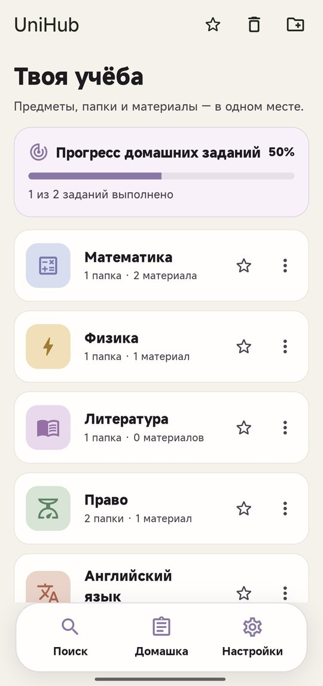

Учёба лежит по папкам, а не по чатам
UniHub собирает материалы и домашние задания в одном приложении для Android. Работает без интернета, без регистрации и без рекламы.
Нужен Android 7.0 или новее. Версия 1.0.0.
Математика
Физика
Право

Всё нужное на своих местах
Предметы, папки, файлы и сроки сдачи не теряются между мессенджерами, галереей и заметками.
Предметы и папки
Раскладывайте материалы по предметам и вложенным папкам: лекции отдельно, практики отдельно.
Ссылки, файлы, фото и видео
Добавляйте всё, что нужно для учёбы, и открывайте прямо из приложения.
Домашние задания
Срок, приоритет и статус для каждого задания. Смотрите списком или в календаре.
Напоминания о дедлайнах
За час до срока приходит уведомление. Выключается в настройках.
Поиск и избранное
Находите материалы и задания за секунду, а самое нужное закрепляйте вверху.
Корзина и резервная копия
Удалённое можно вернуть. Все данные собираются в один ZIP-файл и переезжают на новый телефон.